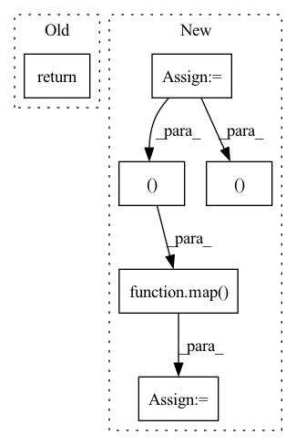

Pattern ID :1819
Before Change
super().__init__()
def forward(self, x):
return x
After Change
h = self.heads
context = default(context, x)
q = self.to_q(x)
k, v = self.to_kv(context).chunk(2, dim = -1)
q = q * self.scale
q, k, v = map( lambda t: rearrange(t, "b n (h d) -> b h n d", h = h), (q, k, v ))
out = attention(q, k, v, mask = mask, causal = self.causal)
out = rearrange(out, "b h n d -> b n (h d)")In pattern: SUPERPATTERN
Frequency: 3
Non-data size: 6
Instances Fragment ID: 13086087
Project Name: lucidrains/memory-efficient-attention-pytorch
Commit Name: b5a38e377b7dc5bab5407cce852eddc69f45de82
Time: 2022-03-03
Author: lucidrains@gmail.com
File Name: memory_efficient_attention_pytorch/memory_efficient_attention.py
M Class Name: Attention
N Class Name: Attention
M Method Name: forward(4)
N Method Name: forward(2)
M Parent Class: nn.Module
N Parent Class: nn.Module
M File Name: memory_efficient_attention_pytorch/memory_efficient_attention.py
N File Name: memory_efficient_attention_pytorch/memory_efficient_attention.py
M Start Line: 16
M End Line: 17
N Start Line: 64
N End Line: 78
Before Change
next_mem, next_lmem = map(torch.stack, (next_mem, next_lmem))
next_mem, next_lmem = map(torch.detach, (next_mem, next_lmem))
return out, Memory(short = next_mem, long = next_lmem)
After Change
num_memory_layers = len(self.memory_layers)
init_mem = lambda: torch.empty(num_memory_layers, b, 0, d, **to(x))
mem = default(mem, init_mem)
lmem = default(lmem, init_mem)
mem_len, lmem_len = map( lambda t: t.shape[2], (mem, lmem ))
total_len = mem_len + lmem_len + self.seq_len
pos_emb = self.pos_emb[:, (self.seq_len - t):total_len]
mem_iter, lmem_iter = map(iterate_tensor, (mem, lmem))
hiddens = []
for ind, (attn, ff) in enumerate(zip(self.attn_layers, self.ff_layers)):
layer_num = ind + 1
use_memory = layer_num in self.memory_layers
memories = map(next, (mem_iter, lmem_iter)) if use_memory else None
if use_memory:
hiddens.append(x)
x = attn(x, memories = memories, calc_memory = use_memory, input_mask = mask, pos_emb = pos_emb)
x = ff(x)
hiddens = torch.stack(hiddens)
out = self.to_logits(x)
// calculate next memory state
next_memory = self.memory_network(lmem, mem, hiddens)
return out, next_memory
Fragment ID: 13086092
Project Name: lucidrains/memory-transformer-xl
Commit Name: cbabe1ae6fa311092a9d0a88116c079a5ad8d790
Time: 2020-07-22
Author: lucidrains@gmail.com
File Name: memory_transformer_xl/memory_transformer_xl.py
M Class Name: MemoryTransformerXL
N Class Name: MemoryTransformerXL
M Method Name: forward(4)
N Method Name: forward(4)
M Parent Class: nn.Module
N Parent Class: nn.Module
M File Name: memory_transformer_xl/memory_transformer_xl.py
N File Name: memory_transformer_xl/memory_transformer_xl.py
M Start Line: 255
M End Line: 296
N Start Line: 306
N End Line: 345
Before Change
position_logits = self.to_position_logits(embed)
value_logits = self.to_value_logits(embed)
return channel_logits
After Change
embed = torch.cat((start_token, embed), dim = 1)
if return_loss:
embed = embed[:, :-1]
embed = self.postemb_norm(embed)
// layers of attention + cross attention
for attn, cross_attn, ff in self.layers:
embed = attn(embed) + embed
embed = cross_attn(embed, encoded) + embed
embed = ff(embed) + embed
// to logits
embed = self.final_norm(embed)
channel_logits = self.to_channel_logits(embed)
position_logits = self.to_position_logits(embed)
value_logits = self.to_value_logits(embed)
if not return_loss:
return channel_logits, position_logits, value_logits
channel_logits, position_logits, value_logits = map( lambda t: rearrange(t, "b n c -> b c n"), (channel_logits, position_logits, value_logits ))
channel_loss = F.cross_entropy(channel_logits, channels)
position_loss = F.cross_entropy(channel_logits, channels)
value_loss = F.cross_entropy(channel_logits, channels) Fragment ID: 13086089
Project Name: lucidrains/transframer-pytorch
Commit Name: 0ccad402b8e5bb5e46393b16e72048567d983ed3
Time: 2022-08-20
Author: lucidrains@gmail.com
File Name: transframer_pytorch/transframer_pytorch.py
M Class Name: Transframer
N Class Name: Transframer
M Method Name: forward(4)
N Method Name: forward(3)
M Parent Class: nn.Module
N Parent Class: nn.Module
M File Name: transframer_pytorch/transframer_pytorch.py
N File Name: transframer_pytorch/transframer_pytorch.py
M Start Line: 179
M End Line: 183
N Start Line: 154
N End Line: 200